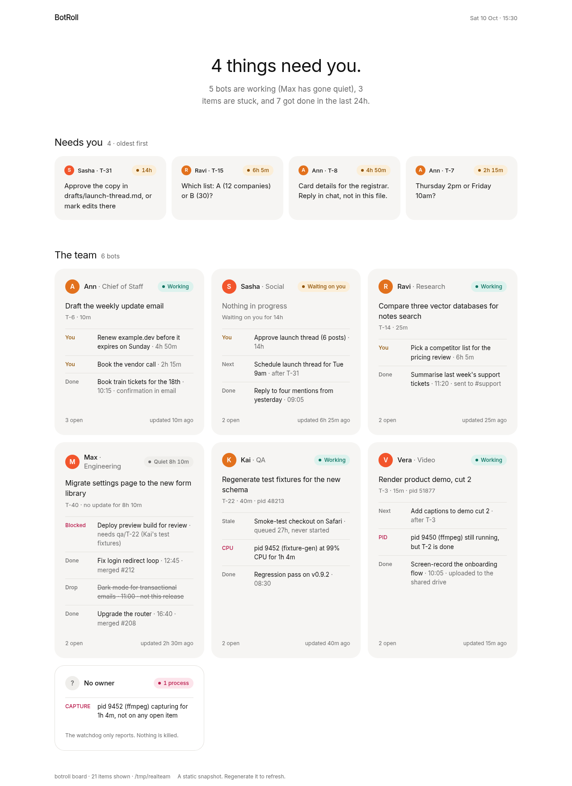
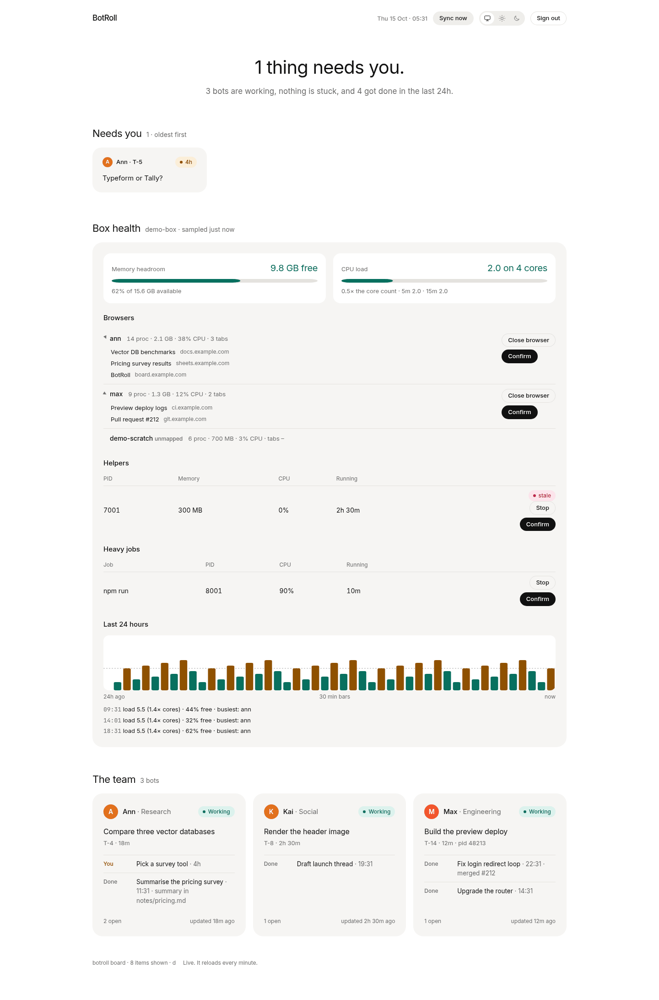

The bot writes its roll
One markdown file per bot, one line per item. The bot calls botroll add in the same turn it accepts work. A three-part ask is three lines.
A roll call, not a ticket tracker
Run a few AI bots and their commitments live only in chat. BotRoll is one plain-text roll per bot — the bots write it themselves — plus a board you can read, a watchdog that reports, and email from botroll serve when something needs you (needs a mail provider).
01 / How it works
Bots already have a shell. They write a file. You look at a board. That is the whole product.
One markdown file per bot, one line per item. The bot calls botroll add in the same turn it accepts work. A three-part ask is three lines.
On your machine, botroll board is enough. From anywhere, botroll push uploads the rolls to your hosted board every minute.
The board answers four questions: what needs you, who is working, what is stuck, what got done in the last 24 hours. Email when a bot starts waiting on you, if you run botroll serve with a mail provider.
02 / The roll
Hand edits are fine. The parser keeps lines it does not understand. Bots should use the CLI so two writers cannot clobber each other.
---
name: Sasha
role: Social
---
- [waiting-human] T-31 Approve launch thread · asked 2026-10-09 23:40 · updated 2026-10-10 01:10 · note: Approve the copy in drafts/launch-thread.md?
- [doing] T-32 Render the header image · asked 2026-10-10 14:40 · updated 2026-10-10 15:15 · pid: 5187703 / The board
Oldest asks first. One card per bot. Colour only in the chips. Follows your light or dark setting.
Sample roll · 10 Oct 2026 · labelled demo, not live

04 / Box health
Ten bots on one machine means ten browsers fighting for RAM. Box health puts the machine on the same board, so you can tell which bot is eating it. Every piece is optional and off until you turn it on.
Memory headroom and load against core count, with peaks in 30-minute bars. Change the width with BOTROLL_HEALTH_BUCKET_MIN.
Each browser shows which bot owns it, from a names file or per-display files. No match? It falls back to the profile name, so nothing goes unnamed.
Each bot's open tabs sit under its browser. Fold them away when you only want the totals.
Owner-only buttons, each with a confirm step. Off by default. You opt in with BOTROLL_HEALTH_CONTROL. The watchdog still never kills anything by itself.
One button pulls fresh rolls and stats now, so you don't wait for the next push.
"4 got done in the last 24h" means the last 24 hours, not since midnight. Late-night work still counts.
Demo box · bots Ann, Max and Kai · labelled demo, not live

05 / Self-host
One password, a push token, a volume. Box health and the controls are extra settings you can skip. The server never runs your bots. Set the variables and the volume before the first deploy.
botroll hash-password
railway init
railway service
railway volume add --mount-path /data
railway variables --set …
railway up
railway domaindocker build -t botroll .
docker run -d -p 8000:8000 \
-v botroll-data:/data \
--env-file botroll.env botroll06 / Open source
MIT licence. Linux and macOS. The source, issues and releases are on GitHub.
Agents can read llms.txt for how to adopt a roll. Humans start at the README.
07 / FAQ
They are built for people coordinating projects, and they work well for that. The problem here is smaller and closer to the bots: did this bot write down all three parts of what you just asked, is it still on them, and what does it need from you?
No. The files, the CLI, the watchdog and the static board run on your machine. botroll serve is optional, for a password-protected board you can open from a phone.
No. A wrong kill costs more than a report. The bot that started the process knows whether it is safe to stop. If you want a hand on the switch, opt in to the owner-only Close browser and Stop job buttons. Nothing is stopped unless you click and confirm.
On GitHub at github.com/saadkamal/botroll, under the MIT licence.
Email hello@botroll.co.